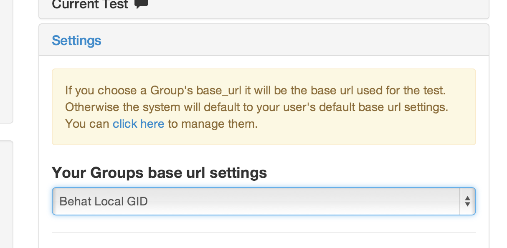

This allows you to choose the URL needed for you or your Group to run the test from.
Test should be relative URL based then you will use this to set the URL.
You can administer urls here
If your url needs basic auth all you need to do is add it like this
The password will need to pass %40 if there is an @ symbol in it.
@TODO add url to #video